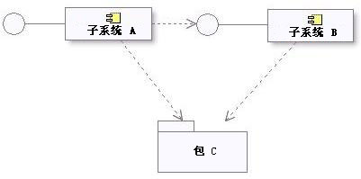
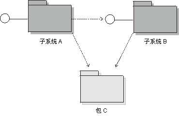

|
可以用大量补充方法使用子系统，以将系统分成以下单元：
-
可以单独订购、配置或交付的单元
-
只要接口保持不变，就可以独立开发的单元
-
可以在一组分发式计算节点之间独立部署的单元
-
可以独立更改而不中断系统其他部分的单元
因此，子系统适用于对组件建模 － 在基于组件的开发中，组合件的可替换单元，大于单个设计类。
另外，子系统可以
-
将系统分成各种单元，这些单元对关键资源提供受限制的安全性
-
表示设计中的现有产品或外部系统。
如果一个复杂的分析类看似包含作为单个设计类单独作用而无法尽责的行为，则应将该分析类映射到设计子系统。如果可能作为一组协作类实施一个复杂的设计类，则该设计类也可以成为子系统。
子系统也是确定要由单独团队独立开发的系统部件的好方法。如果协作设计元素可以与它们的协作一起完全包含在一个包中，则子系统可以提供比简单的包所提供的更强形式的封装。在一个或多个接口后面完全隔离子系统中的内容和协作，以便子系统的客户端仅依赖于该接口。然后子系统的设计者完全与外部依赖关系隔离；需要该设计者（或设计团队）指定如何实现该接口，但他们完全可以自由更改内部子系统设计，而不会影响外部依赖关系。在有大量独立团队的大型系统中，这一程度的分离与正式接口所提供的体系结构实施相结合，是选择子系统而不是简单的包的一个有力的理由。
使用设计子系统封装这些协作，方法是使子系统客户端可以完全不管子系统的内部设计，即使它们使用该子系统提供的服务也是如此。如果协作中的参与类／子系统仅互相交互来产生良好定义的一组结果，则应将该协作及其协作设计元素封装在一个子系统中。
此规则还可以应用于协作的子集。协作的任何部分或者整体都可以被封装和简化，这种做法将使设计更易理解。
提示
提示
|
详细信息
|
|
查找可选性
|
如果特定协作（或子协作）代表可选行为，则在子系统中包含它。可选择删除、升级或替换的功能应认为其是独立的。
|
|
查看系统用户接口。
|
如果用户接口与系统中的实体类是相对独立的（即，可以独立地更改这两者），则创建水平集成的子系统：将相关用户接口边界类分组到一个子系统中并将相关实体类分组到另一个子系统中。
|
|
如果用户接口和它显示的实体类是紧密耦合的（即，更改其中一个将触发另一个的更改），则创建垂直集成的子系统：将相关边界类和实体类包含到一个公共子系统中）。
|
|
查看参与者
|
分隔两个不同的参与者使用的功能，因为每个参与者应能够独立地更改他们对系统的需求。
|
|
创建子系统以封装对外部系统或设备的访问。
|
|
查找设计元素之间的耦合与聚集
|
高度耦合或聚集的类／子系统进行协作以提供某组服务。 将高度耦合的元素组织到子系统中，并按弱耦合界线分隔元素。在某些情况中，通过将类分成具有更多聚集职责的更小的类，或相应地重新划分子系统，可以完全消除弱耦合。
|
|
查看替代
|
如果为特定能力指定了几个服务级别（例如：高、中和低可用性），则将每个服务级别表示为一个单独的子系统，每个子系统实现相同的一组接口。通过这样做，子系统之间可以互相替换。
|
|
查看分发
|
虽然特定子系统可以有多个实例，每个实例在不同的节点上执行，在许多体系结构中不可能在多个节点之间分割组件的单个实例。在必须在各个节点之间拆分子系统行为的情况下，建议将子系统分解成功能更受限制的更小的子系统（每个子系统代表一个单独的组件）。
确定必须存在于每个节点上的功能并创建“拥有”该功能的新子系统，相应地分发原子系统的职责和相关元素。
新子系统对原子系统是内部的。
|
一旦将设计组织成子系统，则相应更新用例实现。
使用 UML 组件对设计子系统建模。此构造提供了以下建模能力：
-
能对类进行分组以定义较大粒度的系统部件
-
能分离可视界面和内部实施
-
可在运行时执行
其他注意事项是：
-
必须向每个设计子系统提供一个名称和简短描述。
-
应将原分析类的职责转移到新创建的子系统，使用子系统描述来记录这些职责
注意：UML 2.0 还为组件定义了名为 <<subsystem>> 的构造型，例如，表示可使用它来代表大规模结构。RUP 设计子系统可能是大规模结构，也可能不是；这两者从 RUP
角度而言都是设计子系统。这是软件设计人员要决定的问题（例如选择是否将组成组件的组件标记为 <<subsystem>>）。
当现有产品是导出接口（即操作，并可能是接收）的产品，但以其他方式保留所有隐藏的实施详细信息时，则应将它建模为逻辑视图中的子系统。可以使用子系统表示的、系统使用的产品示例包括：
-
通信软件（中间件）。
-
数据库访问支持（RDBMS 映射支持）。
-
特定于应用程序的产品。
某些现有的诸如类型和数据结构集合（例如，堆栈、列表和队列）之类的产品最好表示为包，因为它们揭示了比行为更多的内容，并且重要和有用的是包的特定内容而非包本身，包只是一个容器。
可以将普通的实用程序（例如数学库）表示为子系统（如果它们只是简单地导出接口），但这是否有必要或有意义，则依赖于设计者对建模事物性质的判断。子系统是面向对象的构造（因为它们是已建模的组件）：子系统可以有实例（如果设计者这样声明）。 UML
在实用程序中提供了另一种对各组全局变量和过程建模的方法，即类的构造型 － 实用程序没有实例。
当定义子系统来表示产品时，还定义了一个或多个接口来表示产品接口。
设计子系统（建模为 UML 组件）在其语义中与包不同：子系统通过其实现的一个或多个接口提供其行为。包不提供行为；它们只是提供行为的事物的容器。
使用子系统而非包的原因是子系统封装其内容，仅通过其接口提供行为。这么做的好处是：与包不同，可以完全自由地更改子系统的内容和内部行为，只要子系统的接口保持不变。子系统还提供了“可替换的设计”元素：任何两个实现相同接口（或
<<specification>> 组件）的 <<realization>> 组件都是可交换的。
为了确保子系统是模型中的可交换元素，需要强制以下一些规则：
-
子系统应尽可能不显露其内容。理想情况是子系统不能包含具有“公共”可视性的元素，因此子系统之外不存在这样的元素，它依赖于子系统内部特定元素的存在。某些例外情况如下：
-
在某些技术中，无法将子系统外部建模为 UML 接口。例如，将 Java 接口建模为构造型的类。
-
子系统设计可能要求显露类而非 UML 接口。例如，可以使用“delegate”或“access”类隐藏其他类的复杂协作。 在也可以使用普通包的情况下，可以使用子系统以强调封装行为和隐藏内部详细信息的意图。
-
当子系统的外部不是 UML 接口时，通常有一个显示子系统可见元素的图（例如，取名为“外部视图”）是很有帮助的。
-
子系统应定义其对子系统接口的依赖关系（以及上面描述的例外情况中子系统的公共可见元素）。另外，大量子系统可能共享一组公共的接口或类定义，在这些情况中这些子系统“导入”包含公共元素的包的内容。这对体系结构较低层中的包是更常见的情况，以确保一致地定义了必须在子系统之间传送的公共类定义。
子系统和包依赖关系的示例如下：

设计模型中的子系统和包依赖关系
UML（[UML04]）声明：
存在大量适用于组件的 UML 标准构造型（例如 <<specification>> 和
<<realization>>）来对具有不同的规范和实现定义（其中一个规范可有多个实现）的组件建模。
<<specification>> 定型的组件指定了一个对象域，而未定义这些对象的物理实施。它仅提供和要求接口，不打算有任何实现类和子组件作为其定义的一部分。
<<realization>> 定型的组件指定了一个对象域，而且定义了这些对象的物理实施。例如，由 <<realization>> 定型的组件将仅有实现类和子组件，它们实施单独的
<<specification>> 组件指定的行为。
规范和实现的分离实际上允许对子系统有两个独立的描述。规范作为一个协议，定义了客户端为使用子系统所需知道的所有信息。实现是详细的内部设计，用于指导实施者。如果希望支持多个实现，则创建单独的“realization”子系统，并得出从每个实施子系统到规范子系统的实现。
如果子系统的内部状态和行为相对简单，通过子系统显露的接口、用于描述行为的状态表图和描述性文本来指定子系统可能已经足够了。
对于更复杂的内部状态和行为，可以使用分析类在高抽象级别指定子系统。对于大型系统，子系统的指定可能还包括用例。请参阅利用 Rational Unified Proces 开发大规模系统。
在以下情形中，提供与实现分离的详细规范有可能最有用：
-
子系统实现的内部状态或行为很复杂 － 并且为了客户端能够有效地使用规范，应尽可能简单地表达它；
-
子系统是可复用的“组合组件”，它们用来组装大量系统（请参阅概念：组件）；
-
希望让单独的组织开发子系统内部；
-
需要创建子系统的多个实施；
-
希望用有重大内部更改、却没有外部可见行为更改的另一个版本替换子系统。
然而，维护独立的规范需要努力 － 因为必须确保子系统的实现符合规范。何时以及是否创建独立的规范、实现类和协作的标准应在 工作产品：特定于项目的指南中定义。 工作产品：特定于项目的指南中定义。
规范应定义其依赖关系。这些是来自其他子系统和包中的接口和可见元素，它们必须在所有兼容的子系统实现中都是可用的。
实现可能包含由设计者或实施者引入的附加依赖关系。例如，可能有机会使用实用程序组件简化实施 － 但不应将该实用程序组件使用详细情况显露给客户端。应当在作为实现一部分的独立图中捕获这些附加依赖关系。
全面详述的规范定义了客户端使用子系统所需的所有信息。这意味着优化显露的接口和任何公共的可见元素，以便它们与代码成一对一关系。引入以指定子系统行为的分析类应仍然保留为高级别的抽象，因为它们应独立于所有子系统实现。
子系统的实现元素应与代码密切保持一致。
关于该主题的进一步讨论，请参阅技术：从设计到代码的映射。
建模
可以将设计子系统建模为 UML 2.0 组件或 UML 1.5 子系统。这些构造提供了几乎等价的建模能力，如模块性、封装和能够在运行时执行的实例。
关于这些建模选项的其他注意事项是：
-
UML 1.5 子系统显式地包括了“规范”和“实现”的表示法（在上面标题为『子系统规范和实现』一节中定义）。UML 2.0
组件支持规范的表示法（以一个或多个提供和要求的接口的形式）和实现的表示法（由一个或多个实现其行为的类和子组件组成的内部实施）。
-
UML 1.5 子系统也是包。UML 2.0 组件有打包能力，表示它们可以拥有并导入可能很大的一组模型元素。
但是，基本上可以互换地使用这些表示法。将设计子系统表示成 UML 1.5 子系统还是 UML 2.0 组件的决策应记录在为您的项目定制的 特定于项目的指南中。
如果可视建模工具支持 UML 1.5 包但不支持 UML 1.5 子系统，则构造型为 <<subsystem>> 的包可用于表示子系统。
子系统依赖关系限制
在标题为子系统依赖关系限制一节中提到的那些依赖关系限制和讨论同样适用于建模为 UML 1.5 子系统的设计子系统。
UML 1.5 中的子系统和包依赖关系示例如下：

设计模型中的子系统和包依赖关系
子系统规范和实现
UML 1.5 声明：
将子系统的内容分成两个子集：1）规范和 2）实现元素。规范元素与子系统的操作和接收一起，用于给出实现元素所提供的行为的抽象规范。实现元素集合对物理系统的行为单元内部建模。
规范和实现的分离实际上允许对子系统有两个独立的描述。规范作为一个协议，定义了客户端为使用子系统所需知道的所有信息。实现是详细的内部设计，用于指导实施者。
如果建模环境不直接支持，对规范和实现的建模可选择在每个子系统中放置两个包（规范和实现）。
规范的一项动机是支持多个实现。这在 UML 1.x 中不直接支持。如果希望使用 UML 1.5 子系统支持多个实现，请创建单独的“实现”子系统，并得出从每个实现子系统到规范子系统的实现。
基本上，适用于 UML 2.0 的那些规范和实现的注意事项在这里也适用（有关说明，请参阅何时使用和如何使用、依赖关系和与实施的关系）。
附加信息
关于更多信息，请参阅UML 1.x 和 UML 2.0 之间的区别。
|